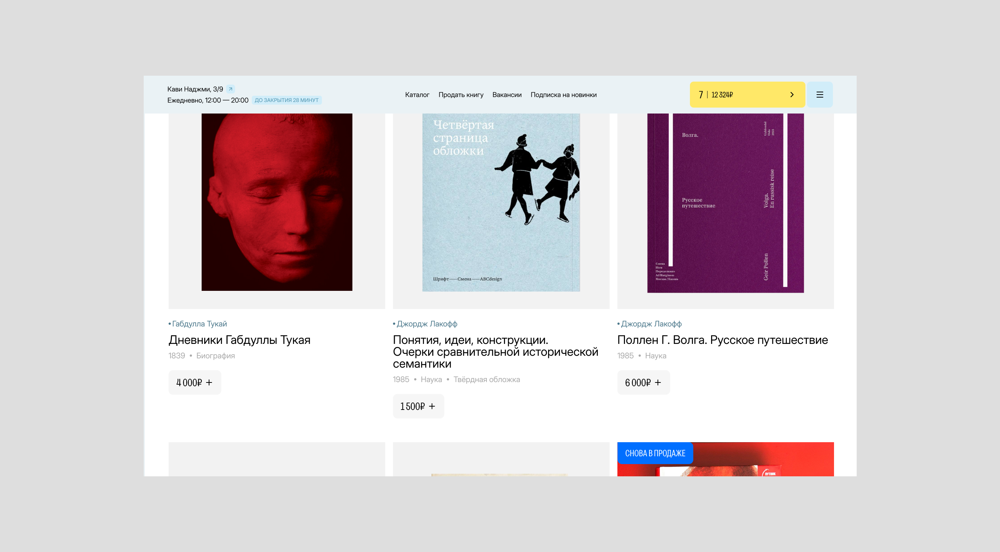
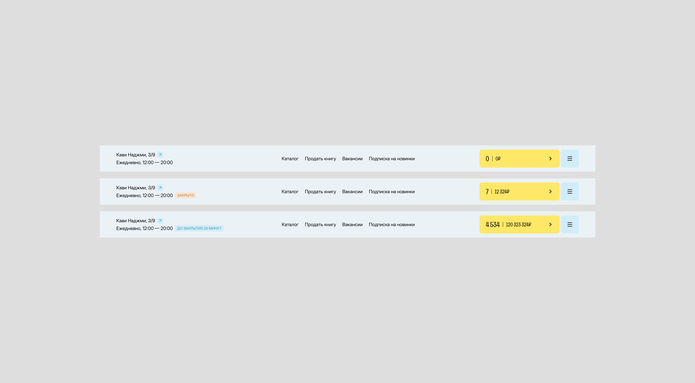
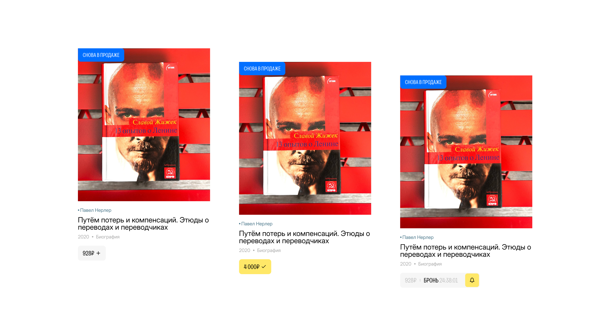
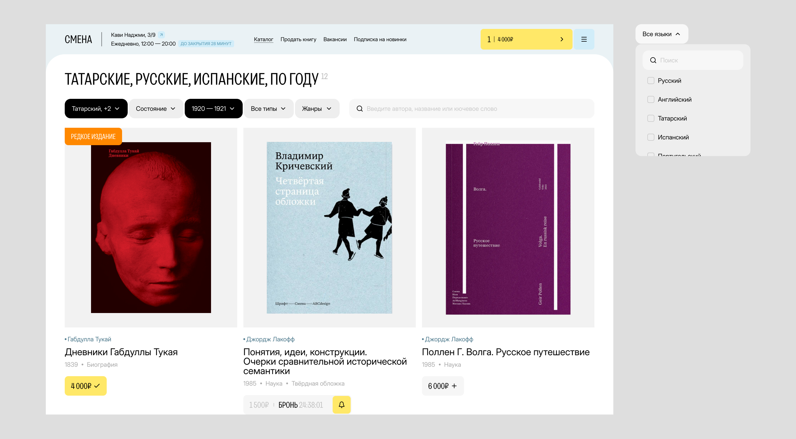
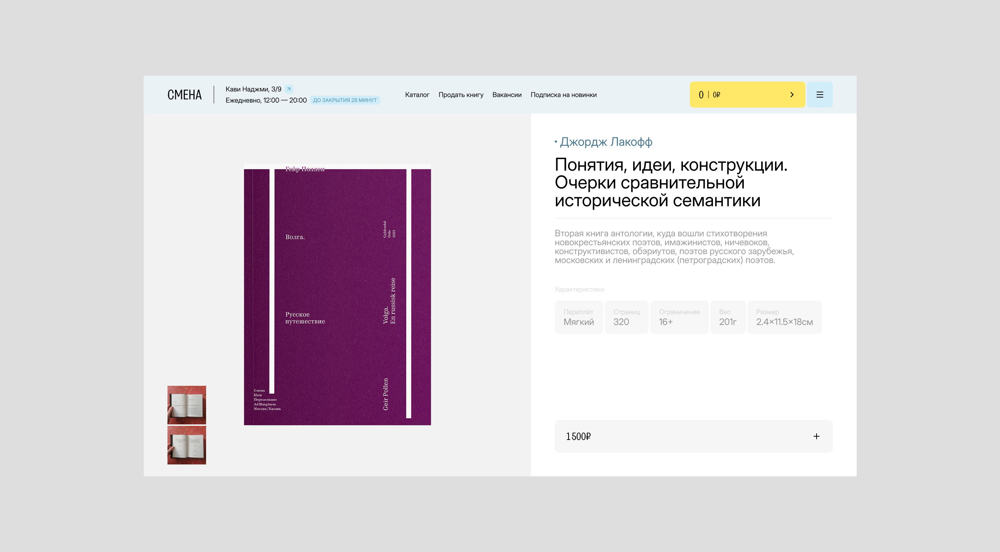

Концепт для локального магазина редких книг в центре Казани
Предусмотрел сценарий оформления, возможность просмотра забронирована ли книга, а также возвёл в абсолют новинки каталога: теперь за редкими изданиями можно охотиться благодаря счётчику
Concept for a local rare book shop in the center of Kazan
I designed the checkout workflow and a feature to check a book's reservation status, while also giving catalog new arrivals pride of place: a counter now makes it possible to hunt for rare editions





